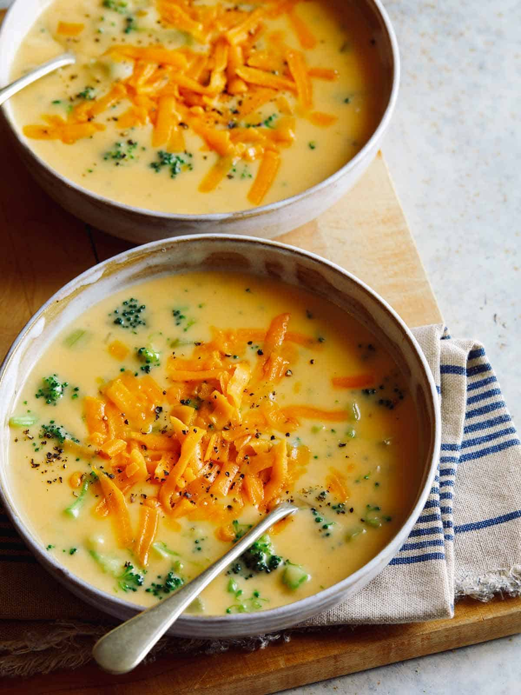

Broccoli and Cheddar Soup

Description
This is a personal favorite of mine to make for myself, either as a meal or an appetizer when I'm in the mood
for a bigger dinner. It's one of my favorite things to get at Panera, and learning how to make it for myself
has been a game changer in regards to quality of life. It's been such a fun hobby learning to make dishes that I
love to eat -- it's great as a way to impress my friends, as well as make life just that much more enjoyable for
me. Below, I've written out the recipe I follow. I hope you enjoy!
Ingredients
- 5 tbsp unsalted butter
- 1/2 onion chopped
- 1/3 cups all purpose flower
- 2 cups vegetable stock
- 1 celery stalk, finely diced
- 2.5 cups broccoli, chopped into bite sized pieces
- 2 cups whole milk
- 2 cups shredded cheddar
- salt and pepper to taste
Okay! Now that we have all the ingredients out of the way, let's get into the actual steps of the recipe.
Instructions
- Melt butter in a large pot over medium heat. Add onion and sweat, for about 5 minutes
- Whisk in flour and cook for about 2 minutes
- Stir in veggie stock and season generously with salt and pepper
- Stir in celery and broccoli and bring to a boil, then reduce heat to medium low. Let simmer until vegetables
are tender, so around 15 or so minutes.
- Stir in milk and continue to simmer until the soup is thick enough to just coat the back of a wooden spoon,
around 2-3 minutes at the most.
- Remove pot from heat and stir in cheddar in small handfuls. Wait until each load of cheese melts before adding
more.
- Season with salt and pepper, and top with more cheddar. Enjoy!